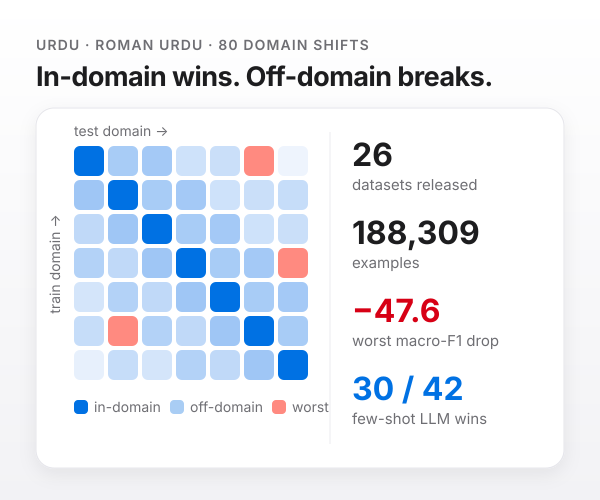
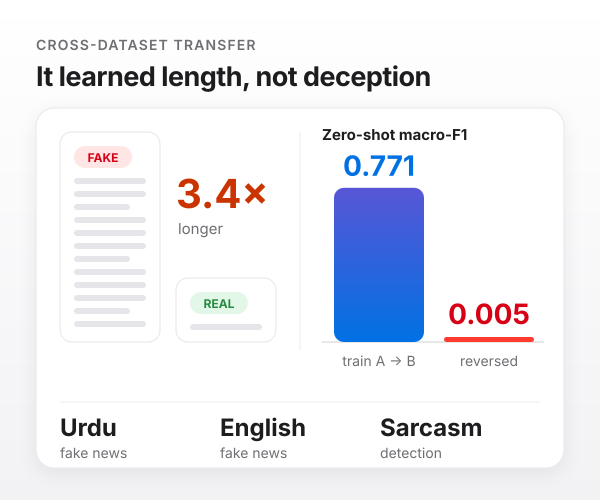
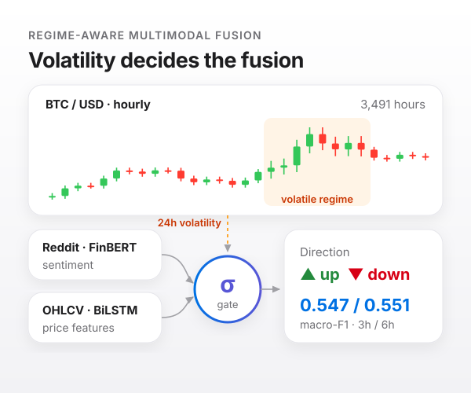

Multilingual & Low-Resource NLP
Investigating cross-lingual transfer, subword tokenization pathologies, and bi-script dynamics across Arabic-script and Roman Urdu. Building representative datasets where high-resource assumptions break down.
Final-year Computer Science student at FAST-NUCES, Lahore. I investigate empirical model robustness, design resilient data pipelines, and deploy production software that performs when the domain shifts.
As a kid I was fascinated by something everyone else took for granted: YouTube seemed to know what I wanted to watch next. I did not know how it worked, but the question stuck. It pulled me into computer science, then into machine learning and AI.
I work wherever the problem needs me: software engineer, forward-deployed engineer, AI/ML engineer, data scientist, or full-stack builder. I shape data, evaluate models, design APIs, ship interfaces, and deploy systems end to end.
“Make the complex feel inevitable: a model that earns trust, a product that reaches people, a system that keeps working.”
My research agenda focuses on making language and predictive models robust under real-world distribution shifts, uncovering benchmark failure modes, and building reliable transfer mechanisms.
Investigating cross-lingual transfer, subword tokenization pathologies, and bi-script dynamics across Arabic-script and Roman Urdu. Building representative datasets where high-resource assumptions break down.
Developing rigorous evaluation protocols beyond static leaderboards. Isolating benchmark artifacts, testing sensitivity to prompt variations, and establishing reproducible evaluation frameworks.
Parameter-efficient adaptation (LoRA/QLoRA), domain-targeted instruction tuning, and alignment techniques to produce specialized, low-latency models for domain-specific production pipelines.
Quantifying model performance decay when deployed on out-of-distribution data. Establishing guarded baseline protocols that measure true invariance versus superficial memorization.
Designing dynamic conditioning mechanisms, learnable gating layers, and hybrid recurrent-transformer architectures that adaptively fuse heterogeneous data streams.
Evaluating zero-shot transfer capabilities across distinct corpora for identical NLP tasks, exposing when state-of-the-art models fail to transfer across dataset creators.
Investigating representation reuse and transfer efficiency from massively multilingual foundation models into low-resource dialects and specialized downstream tasks.
Diagnosing spurious correlations in benchmark datasets—such as token length, punctuation frequency, or syntactic artifacts—where models exploit superficial cues rather than genuine semantics.
Regime-aware forecasting and multimodal signal integration, conditioning temporal neural models on macroeconomic and market volatility shifts to avoid catastrophic recall collapse.
Peer-reviewed preprints and research contributions covering domain robustness, benchmark shortcut learning, and dynamic regime-aware multimodal fusion.
Released 33 Urdu and Roman Urdu text-classification datasets across sentiment, reviews, abuse, fake news, and QA-validation. After removing 4,196 exact-match train-test leaks, I defined a domain-robustness protocol: same-source, target-domain, cross-domain, and baseline-guarded percent robustness.

A unified zero-shot cross-dataset transfer study across Urdu fake news, English fake news, and sarcasm detection. Fake articles in one Urdu dataset run 3.4x longer than real ones. Train one way and macro-F1 is 0.771; reverse the split and it collapses to 0.005, exposing that models learn token length rather than semantic deception indicators.

RAML introduces a learnable sigmoid gate that conditions the fusion of FinBERT-scored Reddit sentiment and BiLSTM-encoded OHLCV features on rolling 24-hour market volatility. While static concatenation causes 6-hour recall to collapse to 0.14 under volatility spikes, the RAML gate preserves robust predictive power.

Hands-on engineering across research labs, production software teams, and automated AI systems.
FAST School of Computing · Lahore, Pakistan · Supervised by Dr. Maryam Bashir
QuickFuel · Lahore, Pakistan
Optimus Automate · Remote
Selected production builds, RAG pipelines, autonomous systems, and evaluation benchmarks.
01 / TaxChronos · 2026
Pakistani tax queries mix English and Urdu in the same sentence, and manual document search took 2 to 3 minutes per question. A RAG pipeline on Qdrant and Gemini answers in under 20 seconds, scored with RAGAS against a naive-retrieval baseline.
Based on the Federal Board of Revenue (FBR) Circular 2024-25, the applicable slab for your income bracket is 15% with a basic exemption up to PKR 600,000.
Sources: FBR Circular No. 01/2024-25 §4(b), Income Tax Ordinance 2001 §149
02 / Daily Digest · 2026
An unattended fetch, rank, summarize, and email pipeline with a Pakistan-relevance ranking function, live on free-tier infrastructure with per-user delivery scheduling.
03 / Urdu Robustness Benchmark · 2026
An open 33-dataset, 288,899-example suite across eight tasks. Five foundation models evaluated, a baseline-guarded robustness protocol, and 4,196 leaks removed before release.
04 / WhisperBench · 2026
Whisper Tiny, Base, and Small evaluated zero-shot on 327 code-mixed Urdu-English recordings from 11 speakers. Switch Point Error Rate isolates mistakes precisely at language-switch boundaries.
Acoustic Audio Stream · 00:03.42
✓ Switch point boundary localized at 00:01.18 · 0.899 WER
05 / FinSight · 2025
A weighted multi-factor risk engine: isolation forest, HMM behavioral states, and an NLP transaction analyzer. CSV in; dashboard and PDF, CSV, Excel out.
One disciplined thread: frame the constraint, architect data and models in unison, then deploy reliable systems designed to run unattended.
Understand the real user bottleneck, data schemas, and non-functional constraints. Inquisitive listening, not premature pitching.
Written architecture document: API contracts, data pipelines, model benchmarks, and definitive definitions of done.
Clean modular code, vector stores, models, and interfaces. Rapid iterations with continuous checkpoint reviews.
Stress testing on live distribution shifts, edge-cases, and confound audits. If it can break quietly, I catch it first.
Containerized, documented, and deployed with full telemetry, CI/CD pipelines, and seamless handover.
Production-proven technologies across machine learning, backend pipelines, and modern web interfaces.
Rigorous computer science fundamentals and engineering leadership at Pakistan's premier computing university.
National University of Computer & Emerging Sciences, Lahore
Key Highlights & Leadership:
Verified professional credentials in machine learning, generative AI, LLM engineering, and data analysis.
Comprehensive LLM engineering, fine-tuning with QLoRA, advanced RAG architectures, and autonomous multi-agent systems.
Supervised and unsupervised algorithms, regression, classification, clustering, and scikit-learn statistical pipelines.
Advanced data wrangling, exploratory data analysis, statistical modeling, and visualization libraries.
Foundation models, attention mechanisms, large language model architectures, and ethical AI deployment.
Open to research collaborations, AI/ML engineering, forward-deployed positions, and ambitious software builds.